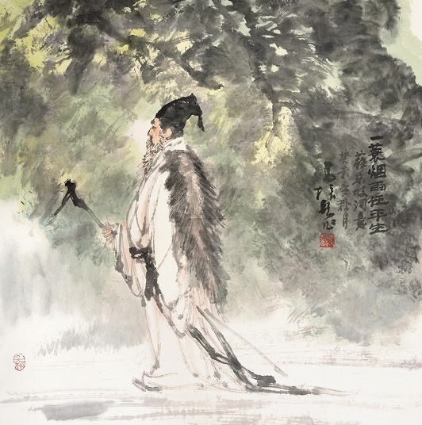
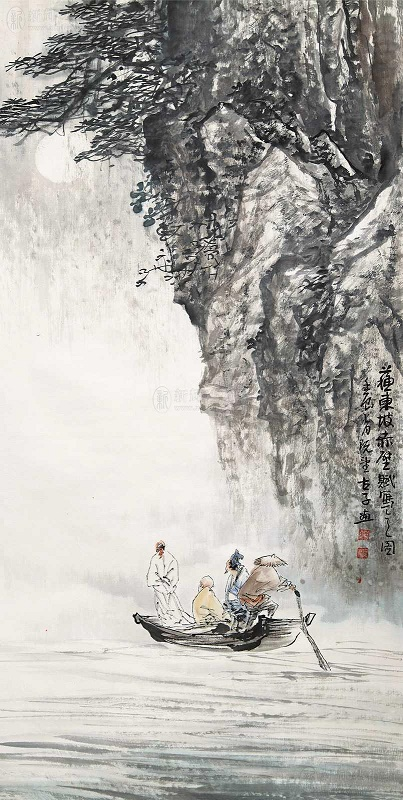
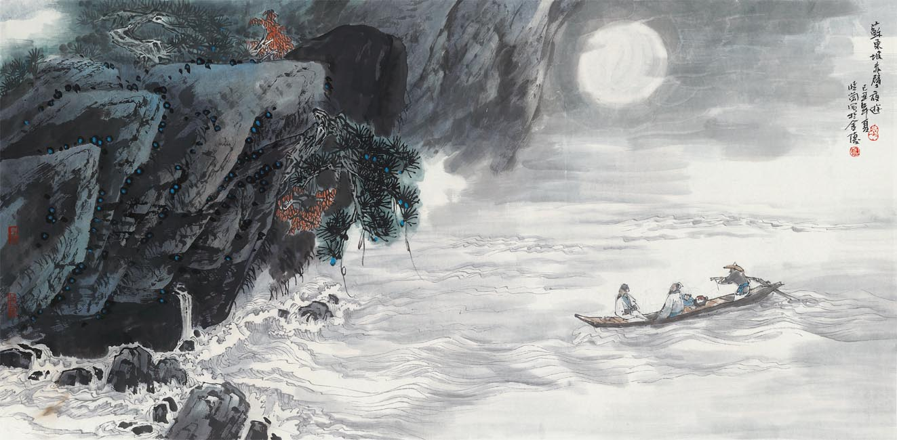

HUBEI
After the Wutai poetry case, Huangzhou was degraded; The officer is the
deputy envoy of the regimental training; No real power.
Open-minded and free-spirited, happy in suffering.
Poetry style: Nature and philosophical reflection blend; the peak of art.
《定风波·莫听穿林打叶声》
莫听穿林打叶声，何妨吟啸且徐行。
竹杖芒鞋轻胜马，谁怕？一蓑烟雨任平生
料峭春风吹酒醒，微冷，山头斜照却相迎。
回首向来萧瑟处，也无风雨也无晴。
Fixed Storm·Don't Listen to the Sound of Breaking through the
Forest and Striking Leaves
Pay no mind to leaves struck by forest rain—Sing, walk slow, let
nature remain.
My cane and straw shoes outmatch the steed,Why fear? Cloaked in mist
and rain, I go as I please.
A chilly spring breeze sobers my wine,faint sunlight greets me from
the ridge-line.
Looking back at that bleak old place—Neither storm nor shine leaves a
lasting trace.

During his exile in Huangzhou, Su Shi faced adversity with an
open-minded attitude toward the changes of nature's storms and winds.
His creative mindset is reflected in: transcending the storms and winds,
inner tranquility, and approaching life's adversities with a composed
demeanor. In terms of art, the language is fresh and refined, the
composition is simple and natural, expressing a sense of transcendent
and boundless openness. The themes revolve around "philosophy, social
conduct, and natural transformation," with an overall emotional
inclination toward boundlessness and composure.
《念奴娇·赤壁怀古》
大江东去，浪淘尽，千古风流人物。
故垒西边，人道是、三国周郎赤壁。
乱石穿空，惊涛拍岸，卷起千堆雪。
江山如画，一时多少豪杰。
遥想公瑾当年，小乔初嫁了，雄姿英发。
羽扇纶巾，谈笑间、樯橹灰飞烟灭。
故国神游，多情应笑我，早生华发。
人生如梦，一尊还酹江月。
Remembrance of the Beautiful Concubine·Nostalgia for the Red
Cliff
The great river flows eastward, Waves washing away all heroes of time
past.
By the western ramparts, People say: Here was Red Cliff of young Zhou
Yu.
The old monk’s tomb stands new and high, Jagged rocks pierce the sky,
Angry waves crash the shore, Churning snowy foam in heaps. The
landscape, like a painting—how many heroes once starred!
I think of Zhou Yu back then, Newly wed to Xiao Qiao, youthful, grand
in spirit.
With feathered fan and silk cap, He laughed as enemy ships burned to
ashes.
Now, I roam this old land— My wistful heart laughs at me, my hair
already gray.
Life is but a dream— Let me pour a libation to the river moon.

In the period of "Sub-relegation-Huangzhou Period (1080 - 1086)", Su Shi
wrote" Remembrance of the Beautiful Concubine·Nostalgia for the Red
Cliff", which expressed his admiration for history and heroes and his
meditation on life through the ancient battlefield Chibi nostalgia. His
creative mood is expressed as: standing at the height of history,
looking back, writing the vicissitudes of the world with the face of the
wind and cloud. In art, the use of allusions, antithesis neat, situation
integration, reflecting romantic pride. The theme revolves around
"history, hero, ideal and loss", and the overall emotional tendency is
strong and intense.
《赤壁赋》
寄蜉蝣于天地，渺沧海之一粟.
Former Ode on the Red Cliffs
I am like a mayfly in the vast universe,
A grain of millet in the sea.

In the period of "Sub-relegation-Huangzhou Period (1080 - 1086)", Su Shi
wrote "Former Ode on the Red Cliffs", which was composed for Huangzhou
Chibi Fu, and triggered philosophical thinking on history, life and
nature through ancient battlefields. His creative mood is manifested as:
Intending to inquire into the relationship between history, nature and
life, showing philosophical feelings. In art, the structure is rigorous,
the presentation is layered, the words are brilliant, and the expression
is deep thinking. The theme revolves around "history, life, detachment",
and the overall emotional tendency is quiet and philosophical.